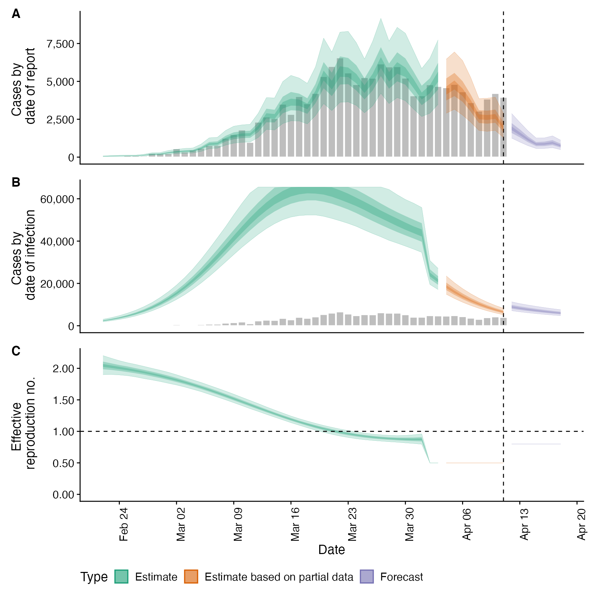

Simulate infections using a given trajectory of the time-varying reproduction number
simulate_infections.Rd This function simulates infections using an existing fit to observed cases but with a modified
time-varying reproduction number. This can be used to explore forecast models or past counterfactuals.
Simulations can be run in parallel using
This function simulates infections using an existing fit to observed cases but with a modified
time-varying reproduction number. This can be used to explore forecast models or past counterfactuals.
Simulations can be run in parallel using future::plan.
simulate_infections( estimates, R = NULL, model = NULL, samples = NULL, batch_size = 10, verbose = interactive() )
Arguments
| estimates | The |
|---|---|
| R | A numeric vector of reproduction numbers; these will overwrite the reproduction numbers
contained in |
| model | A compiled stan model as returned by |
| samples | Numeric, number of posterior samples to simulate from. The default is to use all
samples in the |
| batch_size | Numeric, defaults to 100. Size of batches in which to simulate. May decrease run times due to reduced IO costs but this is still being evaluated. If set to NULL then all simulations are done at once. |
| verbose | Logical defaults to |
Examples
# \donttest{ #set number of cores to use options(mc.cores = ifelse(interactive(), 4, 1)) # get example case counts reported_cases <- EpiNow2::example_confirmed[1:50] # set up example generation time generation_time <- get_generation_time(disease = "SARS-CoV-2", source = "ganyani") # set delays between infection and case report incubation_period <- get_incubation_period(disease = "SARS-CoV-2", source = "lauer") reporting_delay <- list(mean = convert_to_logmean(3, 1), mean_sd = 0.1, sd = convert_to_logsd(3, 1), sd_sd = 0.1, max = 15) # fit model to data to recover Rt estimates est <- estimate_infections(reported_cases, generation_time = generation_time, delays = delay_opts(incubation_period, reporting_delay), rt = rt_opts(prior = list(mean = 2, sd = 0.1)), gp = gp_opts(ls_min = 10, boundary_scale = 1.5,, basis_prop = 0.1), obs = obs_opts(scale = list(mean = 0.1, sd = 0.01))) # update Rt trajectory and simulate new infections using it R <- c(rep(NA_real_, 40), rep(0.5, 10), rep(0.8, 7)) sims <- simulate_infections(est, R) plot(sims)# }